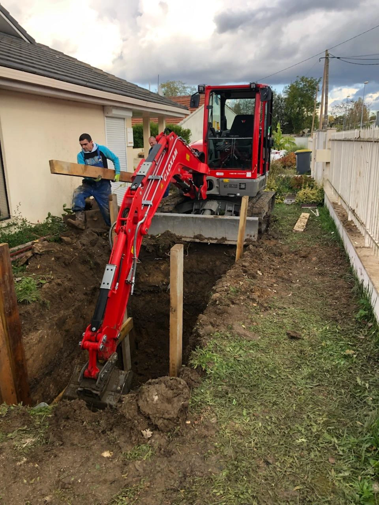
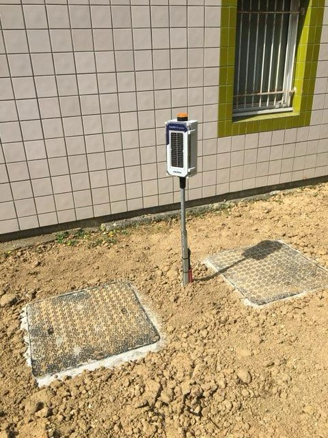

Entreprise d’assainissement en Seine-et-Marne (77)
Pour vos besoins en débouchage de canalisation, inspection caméra, vidange de bac à graisse, faites appel à Assainissement 77. Nous intervenons rapidement sur tout le territoire de la Seine-et-Marne, avec ou sans rendez-vous. Nos équipes expérimentées disposent d’un matériel de pointe pour vous offrir un service de qualité, en toute sécurité.
NOS VEHUCULES


RÉALISATIONS




DES INTERVENTIONS MENÉES PAR DES EXPERTS CERTIFIÉS EN SEINE-ET-MARNE (77)
Pour tous vos besoins en débouchage, vidange de bac à graisse, inspection vidéo, faites appel à notre équipe de professionnels en Seine-et-Marne. Nos techniciens qualifiés assurent des interventions précises, efficaces et durables. Avec Assainissement 77, vous bénéficiez d’un savoir-faire reconnu et d’un accompagnement sérieux, du diagnostic à la réalisation.
NOTRE ÉQUIPE
CONTACTEZ - NOUS
IDF Assainissement 77
QUESTIONS FREQUENTES
Assainissement 77 est une entreprise specialisee dans les travaux d'assainissement en Seine-et-Marne. Nous intervenons pour le debouchage, l'inspection camera et la vidange de bacs a graisse aupres des particuliers et professionnels.
Nous couvrons l'ensemble du departement de la Seine-et-Marne (77). Nos equipes se deplacent dans toutes les communes, des zones urbaines aux secteurs ruraux.
Oui, tous nos techniciens sont formes et certifies pour intervenir en toute securite. Ils maitrisent les techniques modernes d'assainissement et disposent d'equipements professionnels.
Nous disposons de vehicules hydrocureurs et de camions pompe adaptes a tous types d'interventions. Notre flotte peut acceder aussi bien aux zones etroites qu'aux grands chantiers.
Absolument. Nous collaborons avec les restaurants, hotels, collectivites et entreprises pour l'entretien regulier de leurs installations d'assainissement et bacs a graisse.